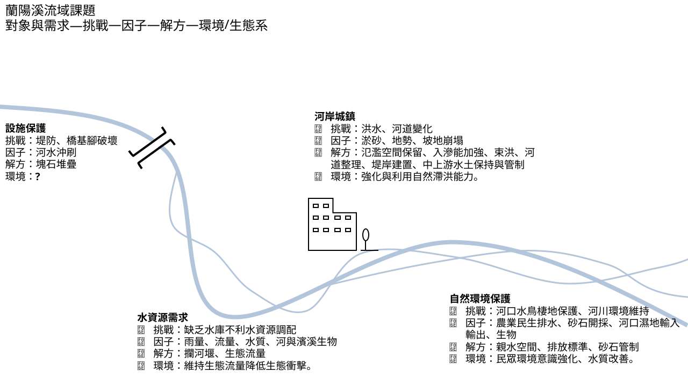
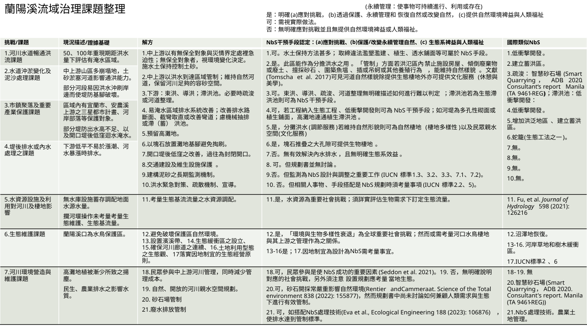
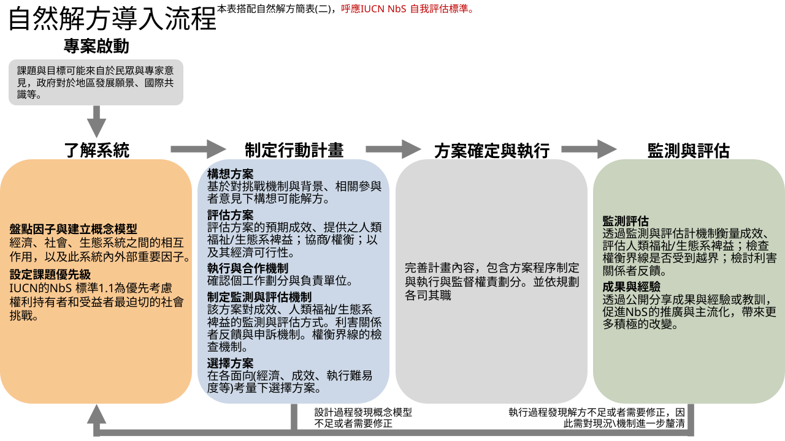
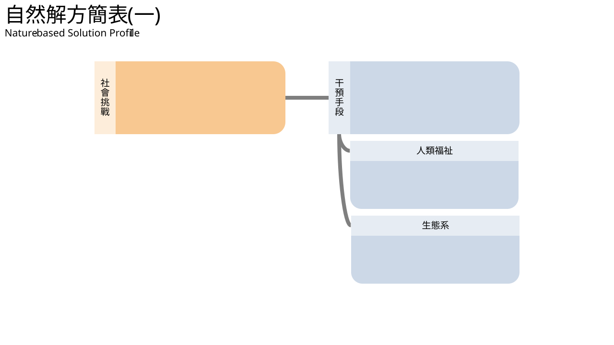
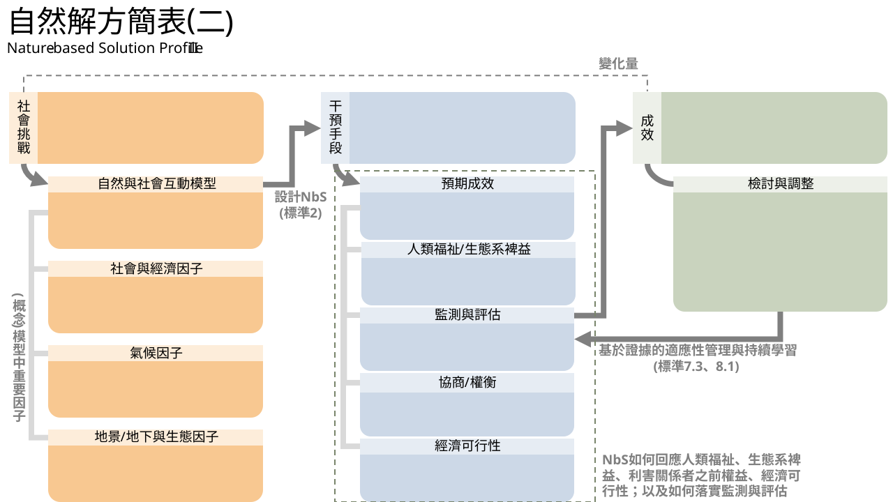
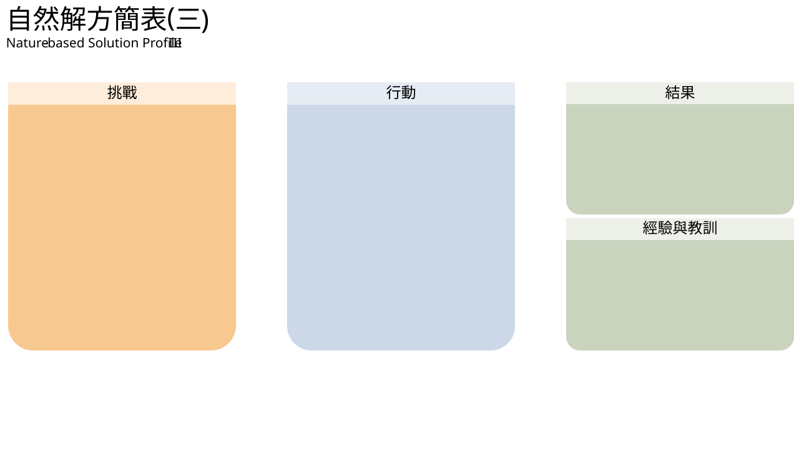

| 工具類別 |
|---|
| 工具子類別 |
| 名稱 |
| 或文字搜尋 |
|---|
| 工具類別 | 工具子類別 |
|---|---|
| A. 環境友善指引 | A1. |
| B. 管理與評估 | B1. 指標與模式; B2. 決策支援系統 |
| C. 案例與干預 | C1.干預手段; C2.專案 |
| D. 資料庫 | D1. |
| 本工具箱之工具引索分為四大項： A、環境友善指引──收集國際永續利用生態系統之策略、評估指引。 B、管理與評估。分為兩子項目：(B1)指標與模式；(B2)決策支援系統。B1針對流域治理規劃此項目收集水文/水理模式、生態系服務評估指標、與其他評估指標；B2包含相關決策輔助工具、框架。 C、案例與干預。分為兩子項目：(C1)干預手段、(C2)專案。C1主要為流域中可採用的獨立干預手段。C2 包含研究案例、整合報告、專書──一種或複合多種干預手段以及評估方法，或干預手段介紹/研究/檢討。 D、資料庫，包含基礎資料庫以及國際相關工具箱。 本工具箱並非包含到規劃執行NbS專案過程中所有需要的工具，此不足可由國際相關工具箱補齊；國際相關工具箱(如 IWRM Tools)將列於 D 中。IWRM Tools 內容包含政策規劃、相關者邀請、管理評估、財務所需之工具。 | |